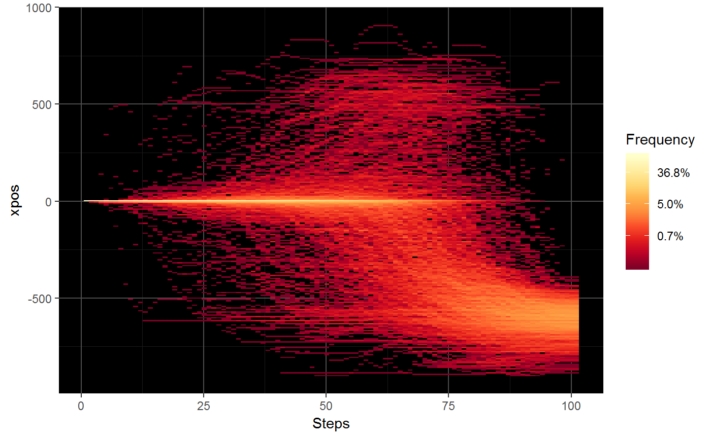

mt_plot_riverbed creates a plot showing the distribution of one
trajectory variable (e.g., the x-positions or velocity) per time step.
mt_plot_riverbed(
data,
use = "tn_trajectories",
y = "xpos",
y_range = NULL,
y_bins = 250,
facet_row = NULL,
facet_col = NULL,
facet_data = "data",
grid_colors = c("gray30", "gray10"),
na.rm = FALSE
)mousetrap data object containing the data to be plotted.
character string specifying the set of trajectories to use in the plot. The steps of this set will constitute the x axis. Defaults to 'tn_trajectories', which results in time steps being plotted on the x axis.
variable in the mousetrap data object to be plotted on the output's y dimension. Defaults to 'xpos', the cursor's x coordinate.
numerical vector containing two values that represent the upper and lower ends of the y axis. By default, the range is calculated from the data provided.
number of bins to distribute along the y axis (defaults to 250).
an optional character string specifying a variable in
data[[facet_data]] that should be used for (row-wise) faceting. If
specified, separate riverbed plots for each level of the variable will be
created.
an optional character string specifying a variable in
data[[facet_data]] that should be used for (column-wise) faceting.
If specified, separate riverbed plots for each level of the variable will
be created.
a character string specifying where the (optional) data containing the faceting variables can be found.
a character string or vector of length 2 specifying the
grid color(s). If a single value is provided, this will be used as the grid
color. If a vector of length 2 is provided, the first value will be used as
the color for the major grid lines, the second value for the minor grid
lines. If set to NA, no grid lines are plotted.
logical specifying whether missing values should be removed. This is not done by default, because generally riverbed plots are generated from preprocess trajectories (e.g., time-normalized trajectories) that all have the same length (i.e., the same number of steps).
This function plots the relative frequency of the values of a trajectory variable separately for each of a series of time steps. This type of plot has been used in previous research to visualize the distribution of x-positions per time step (e.g., Scherbaum et al., 2010).
mt_plot_riverbed usually is applied to time-normalized trajectory data
as all trajectories must contain the same number of values (if
na.rm=FALSE, the default).
Scherbaum, S., Dshemuchadse, M., Fischer, R., & Goschke, T. (2010). How decisions evolve: The temporal dynamics of action selection. Cognition, 115(3), 407-416.
Scherbaum, S., & Kieslich, P. J. (2018). Stuck at the starting line: How the starting procedure influences mouse-tracking data. Behavior Research Methods, 50(5), 2097–2110.
mt_plot for plotting trajectory data.
mt_time_normalize for time-normalizing trajectories.
# Time-normalize trajectories
KH2017 <- mt_time_normalize(KH2017)
# Create riverbed plot for all trials
mt_plot_riverbed(KH2017)

if (FALSE) {
# Create separate plots for typical and atypical trials
mt_plot_riverbed(mt_example, facet_col="Condition")
# Create riverbed plot for all trials with custom x and y axis labels
mt_plot_riverbed(mt_example) +
ggplot2::xlab("Time step") + ggplot2::ylab("X coordinate")
# Note that it is also possible to replace the
# default scale for fill with a custom scale
mt_plot_riverbed(mt_example, facet_col="Condition") +
ggplot2::scale_fill_gradientn(colours=grDevices::heat.colors(9),
name="Frequency", trans="log", labels=scales::percent)
}